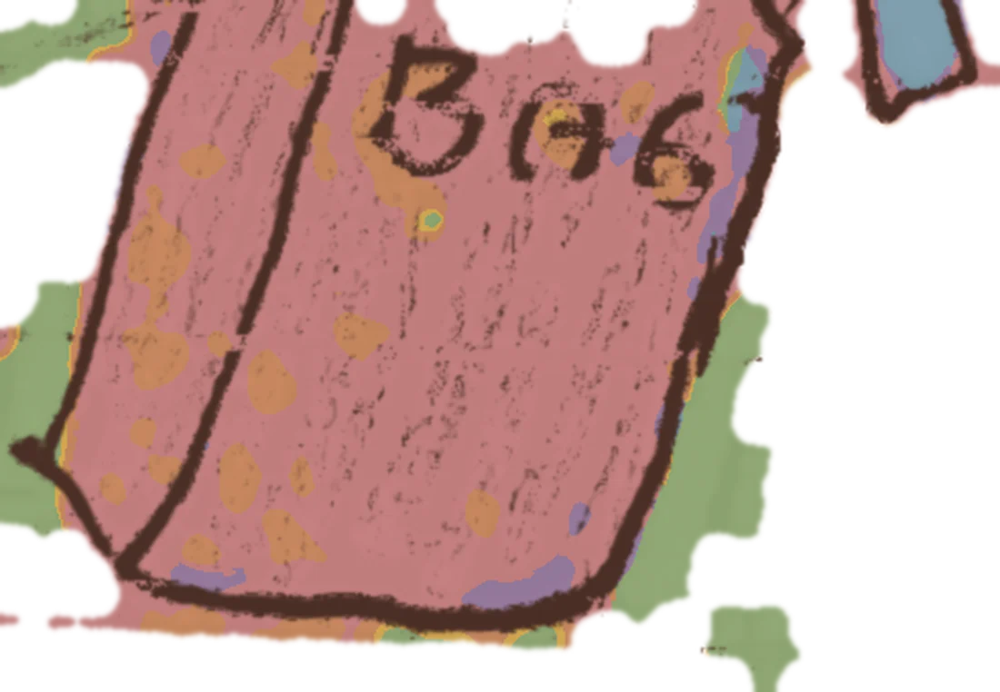

Stormy, the Thinking Cap
Draft story, written to fill this space. Nana's own version is coming.

Stormy is a gray cat who lives on a branch of the tallest tree, and Stormy has the longest tail in Wonderland. It is striped in every color, like a rainbow that kept going, and it hangs all the way down to the grass.
When the girl has something hard to figure out, she comes to the bottom of the tree and reaches up for the end of Stormy's tail. Then Stormy climbs down and settles on top of her head, warm and purring, and wraps that long rainbow tail around and around.
"Stormy is my new thinking cap," she says. "Or maybe a cat hat."
It works every time. With Stormy on her head, she can think of anything. And while she thinks, charms from Castle Charms drift down through the branches, and she catches them and puts them in her bag, to share later.
